| Indicadores macroeconómicos del sector agropecuario | |||||
|---|---|---|---|---|---|
| Año | PIB agrop. (% PIB) | Empleo agrop. (% PEA) | Población rural (%) | Subalimentación (%) | Rendimiento cereal INE (kg/ha) |
| 2000 | 13.0 | 36.6 | 38.1 | NA | 1719 |
| 2005 | 11.8 | 36.2 | 35.8 | 27.6 | 2340 |
| 2010 | 10.4 | 29.8 | 33.6 | 19.9 | 2320 |
| 2015 | 10.2 | 28.0 | 31.6 | 16.1 | 2465 |
| 2020 | 9.1 | 27.9 | 30.0 | 16.0 | 2189 |
| 2023 | 9.3 | 25.1 | 29.1 | 21.8 | NA |
| Fuentes: WDI, INE Bolivia, FAOSTAT. Panel maestro v12. | |||||
Desempeño del sector agropecuario
Productividad, estructura y transformación territorial 1990-2024
El sector agropecuario boliviano ha experimentado dos décadas de transformaciones estructurales profundas: expansión de la frontera agrícola en el oriente, consolidación del altiplano alrededor de la quinua y el ganado camélido, y un patrón de productividad que ha crecido más lentamente que la inversión pública.
Bolivia en mapa
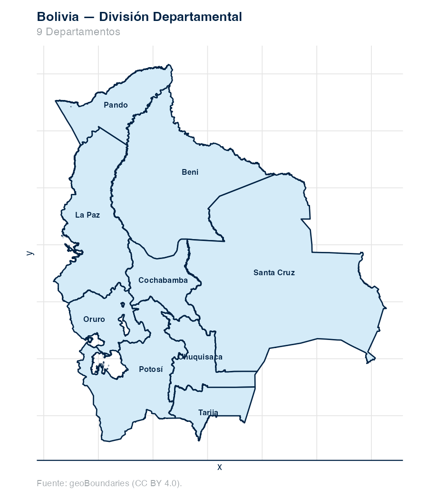
El país se divide en nueve departamentos con perfiles agropecuarios contrastantes: el altiplano andino (La Paz, Oruro, Potosí, Chuquisaca) con minifundio, papa y quinua; los valles templados (Cochabamba, Tarija) con horticultura y vid; y los llanos orientales (Santa Cruz, Beni, Pando) con agricultura comercial extensiva (soya, caña, ganadería). Esta heterogeneidad territorial estructura el resto del análisis.
Contribución macroeconómica
En 2020, Bolivia ocupó el sexto lugar en LAC en participación del valor agregado agropecuario en el PIB (9,1 %), por encima de Chile (4,0 %) y México (3,7 %). El empleo agropecuario ha caído gradualmente de 30 % (2010) a 25 % (2023), reflejando una diversificación más lenta que el promedio regional.
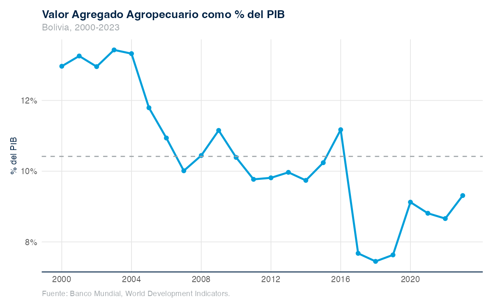
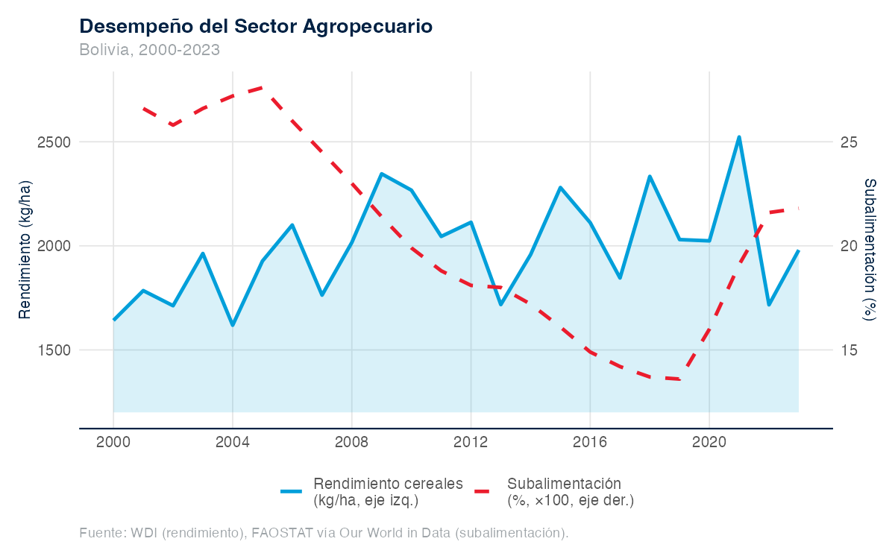
Productividad total de factores
La productividad total de factores (TFP) es el indicador-síntesis del desempeño productivo del sector. Bolivia muestra un crecimiento sostenido pero modesto: la TFP creció ~30 % entre 2000 y 2023, frente a ~70 % en Brasil y ~50 % en Chile en el mismo período.
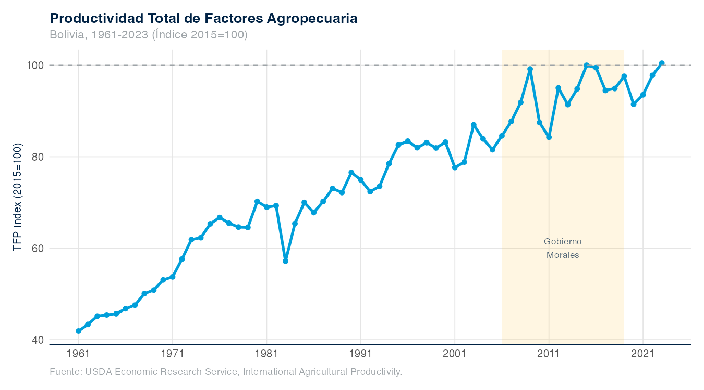
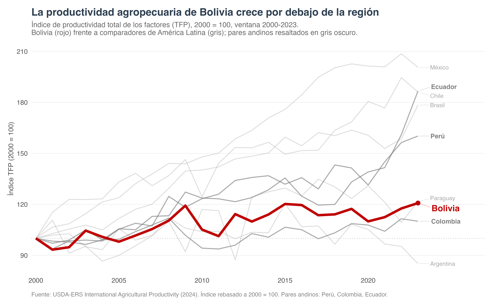
Descomposición — outputs vs inputs
La TFP es la diferencia entre el crecimiento del valor de la producción y el crecimiento de los insumos utilizados. La descomposición permite ver si el desempeño del sector se debe a más recursos (extensivo) o a mejor uso de los mismos (intensivo).
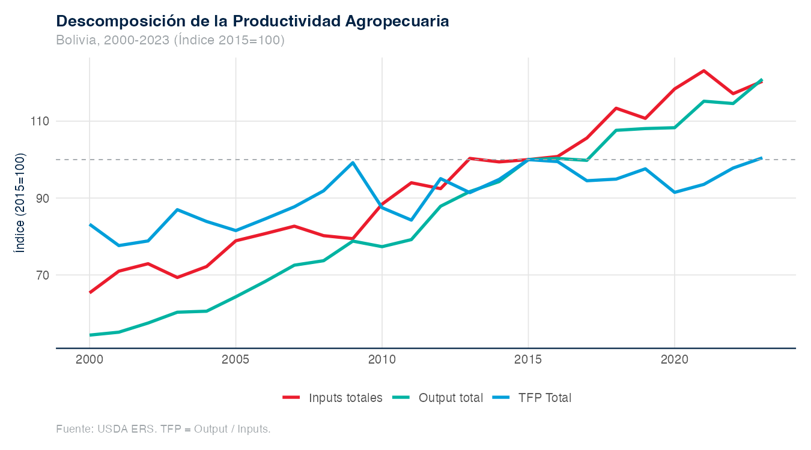
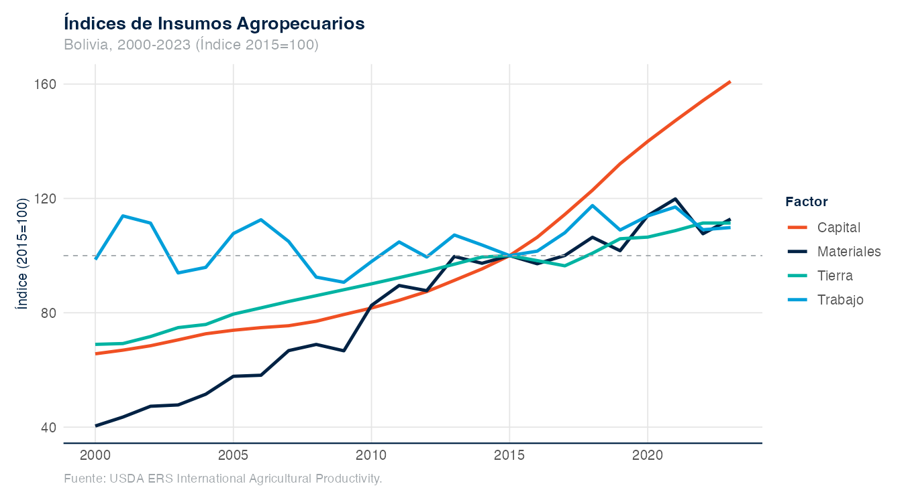
El crecimiento agropecuario boliviano es predominantemente extensivo: la expansión de tierra cultivada y rebaño explica buena parte del aumento del valor de producción, mientras que los rendimientos por hectárea y por animal crecen más lentamente. Esta característica enlaza con el análisis de uso del suelo más adelante en este capítulo.
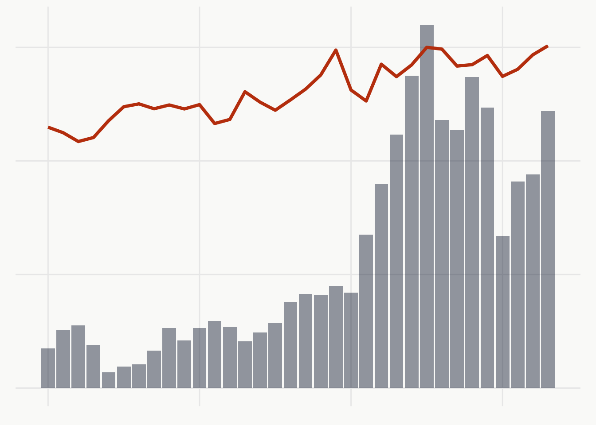
Hallazgo central
La inversión pública agropecuaria se multiplicó por ~10 entre 2000 y 2015, mientras la TFP creció apenas 30 % en el mismo período. Este desacople es el problema central que motiva el análisis de eficiencia.
Transformación estructural — ENA 2008 vs 2015
| Cambio estructural por departamento, 2008–2015 | ||||||
|---|---|---|---|---|---|---|
| Departamento | UPAs 2008 | UPAs 2015 | Δ UPAs (%) | Bovinos 2008 (mil) | Bovinos 2015 (mil) | Δ Bovinos (%) |
| Chuquisaca | 88 858 | 56 022 | -37.0 | 616 | 628 | 1.9 |
| Cochabamba | 200 724 | 156 650 | -22.0 | 525 | 527 | 0.5 |
| La Paz | 235 467 | 159 028 | -32.5 | 390 | 404 | 3.6 |
| Oruro | 19 229 | 31 366 | 63.1 | 67 | 83 | 22.7 |
| Potosí | 106 030 | 65 748 | -38.0 | 188 | 191 | 1.4 |
| Tarija | 38 326 | 34 988 | -8.7 | 403 | 421 | 4.4 |
| Santa Cruz | 72 919 | 87 333 | 19.8 | 2220 | 3674 | 65.5 |
| Beni | 20 754 | 30 470 | 46.8 | 3310 | 2716 | -18.0 |
| Pando | 5 786 | 6 652 | 15.0 | 67 | 119 | 78.0 |
| Fuente: ENA 2008 + ENA 2015 (INE Bolivia). Microdatos procesados. | ||||||
Tres patrones territoriales emergen del cruce censal:
Altiplano y valles (Chuquisaca, Cochabamba, La Paz, Potosí): caída de UPAs entre −22 % y −38 % en siete años. Consolidación de unidades, migración rural y envejecimiento.
Llanos (Santa Cruz, Beni, Pando): expansión +15 % a +47 %. Frontera agrícola activa, especialmente en Santa Cruz.
Bovinos: Santa Cruz suma 1.5 millones de cabezas adicionales (+65 %); Beni pierde 18 % en el mismo período — posible impacto climático y cambio de tenencia.
Cambio de uso del suelo
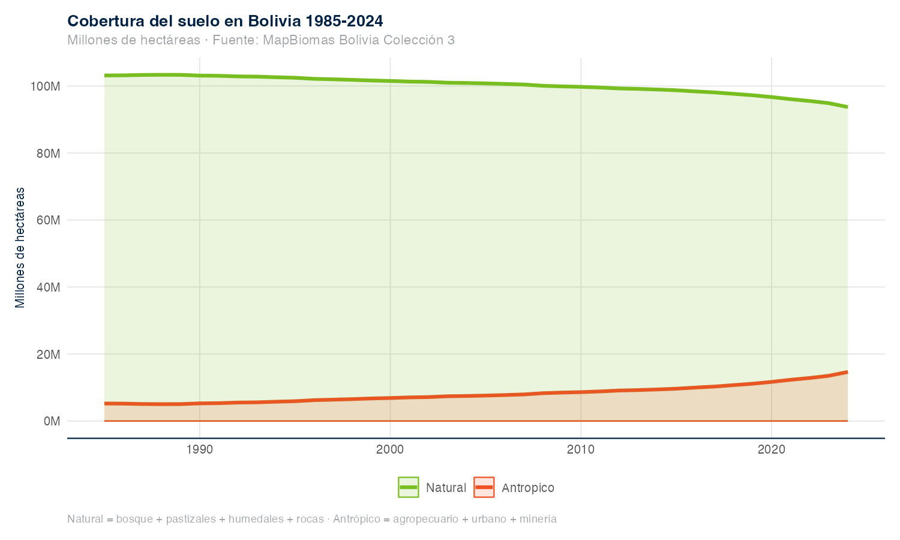
| Cobertura del suelo Bolivia, 1985 vs 2024 | ||||
|---|---|---|---|---|
| Categoría | 1985 (M ha) | 2024 (M ha) | Δ M ha | Δ relativo (%) |
| Antrópico | 5.23 | 14.66 | 9.43 | 180.3 |
| Natural | 103.16 | 93.73 | -9.43 | -9.1 |
| Fuente: MapBiomas Bolivia Colección 3. | ||||
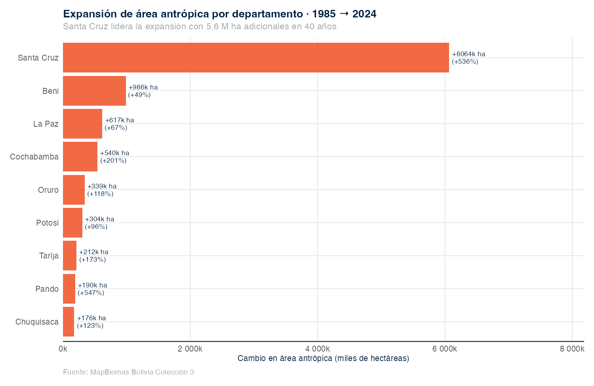
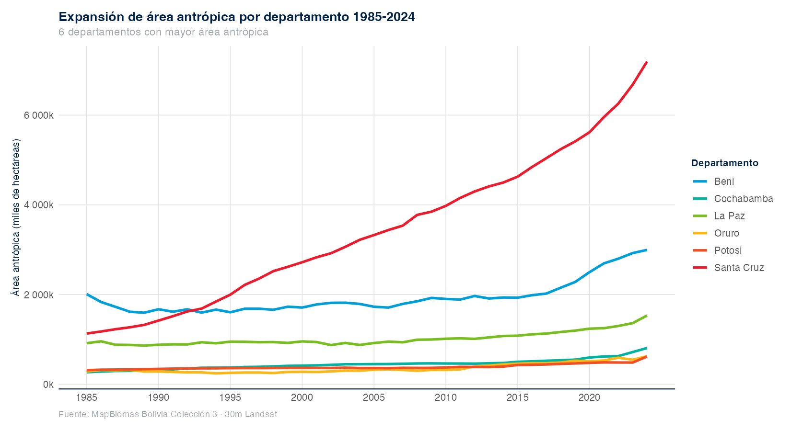
Bolivia perdió aproximadamente 9,4 millones de hectáreas de cobertura natural entre 1985 y 2024. Santa Cruz concentra el 64 % de la expansión antrópica del país. Esta huella ambiental es central para el análisis de sostenibilidad y para el debate sobre los costos no monetarios del modelo agroexportador.
Geografía municipal de la expansión
A nivel municipal, la expansión es mucho más concentrada. Apenas un puñado de municipios del oriente concentra la transformación territorial; el resto del país muestra cambios mucho más modestos.
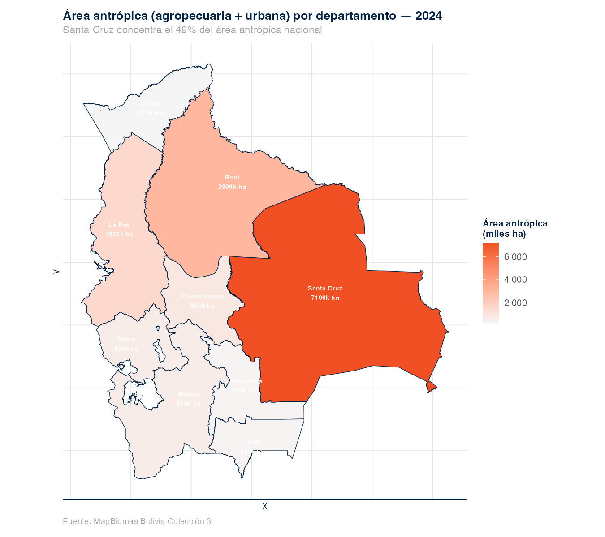
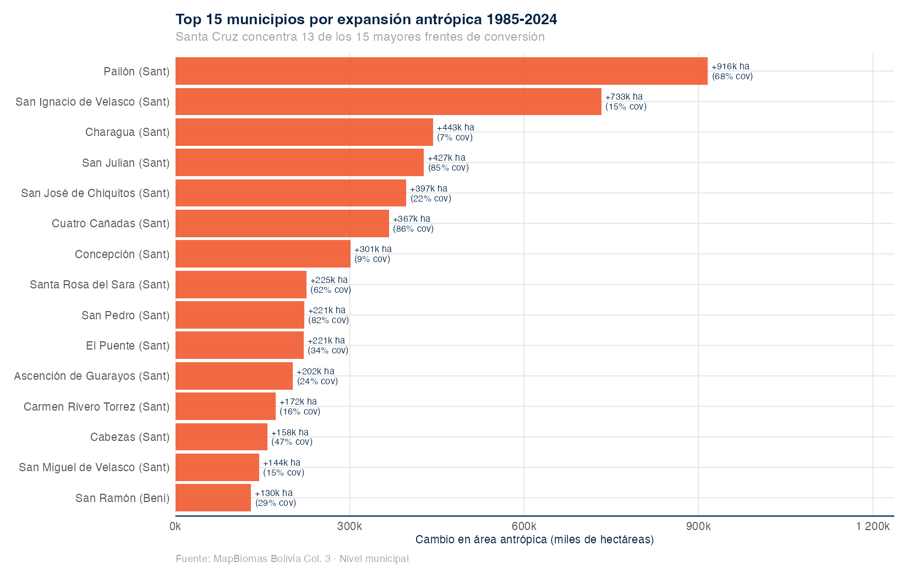
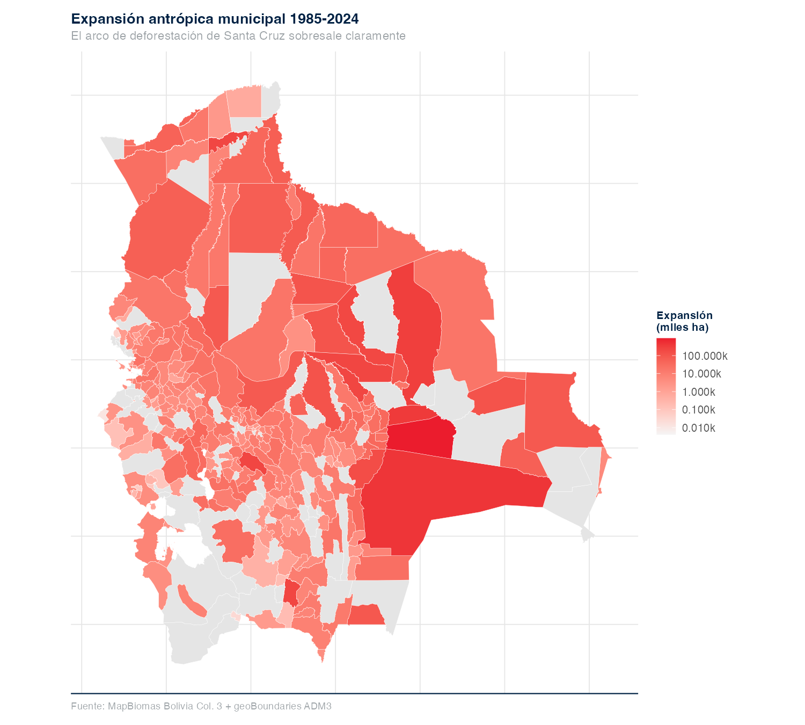
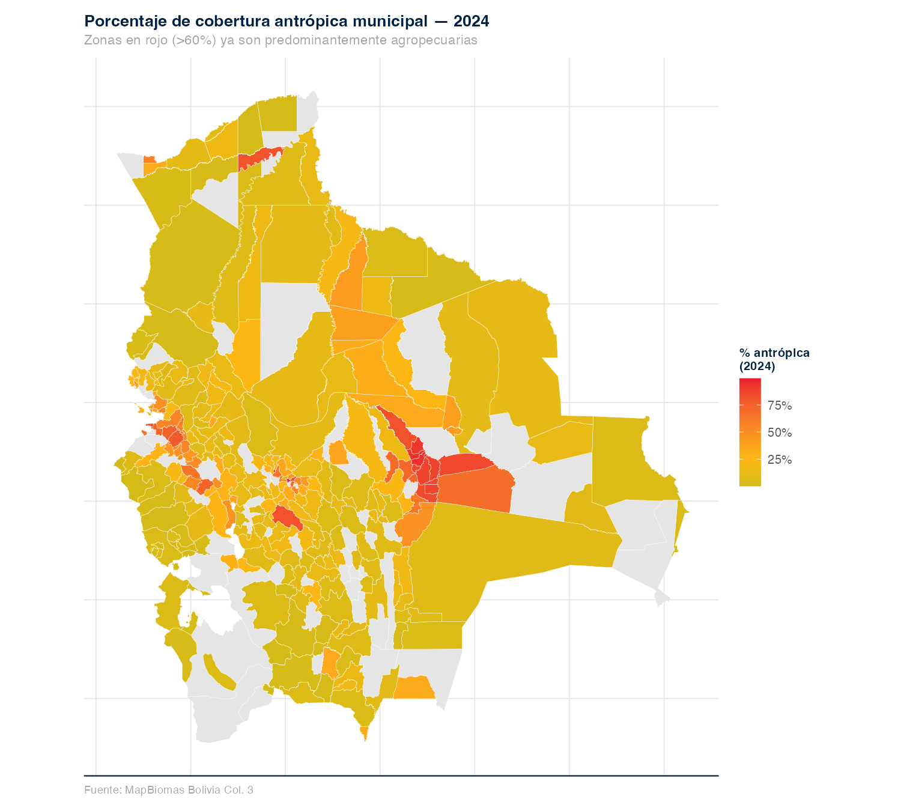
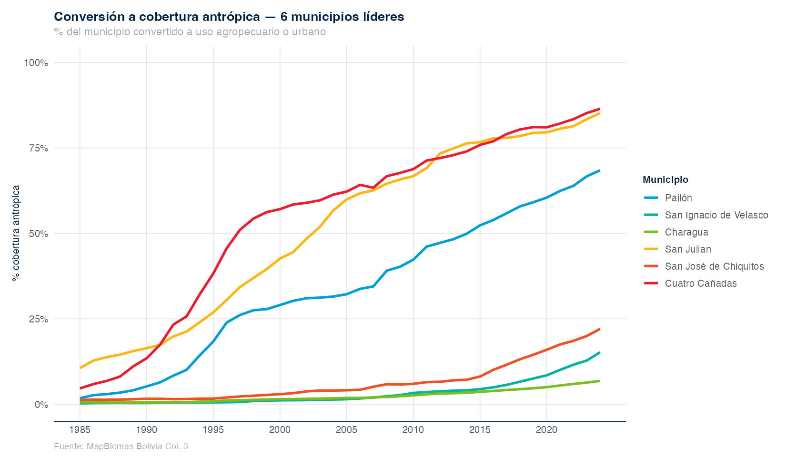
Concentración extrema
La transformación del paisaje boliviano no es difusa, es concentrada: 6 municipios del oriente representan más del 50 % del cambio neto 1985-2024. Esta característica condiciona el debate de política: programas universales (gasto promedio uniforme por municipio) tienen poca tracción ambiental si no diferencian por intensidad de cambio.
Pobreza rural y seguridad alimentaria
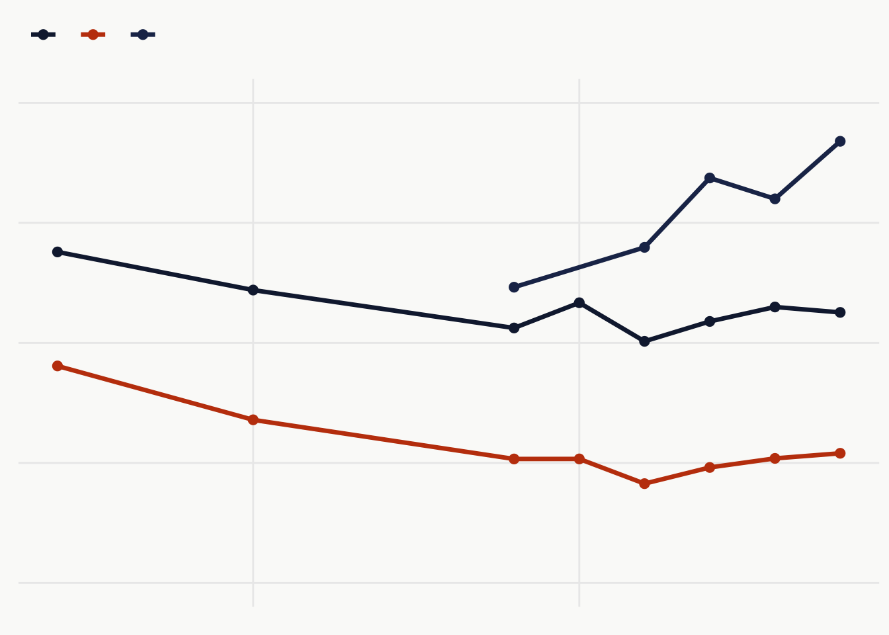
Tendencia preocupante (hallazgo F06)
- Pobreza rural 2012→2021→2024: 55 % → 40 % → 45 % (reversión).
- Pobreza extrema rural 2012→2021→2024: 36 % → 17 % → 22 %.
- FIES inseguridad alimentaria 2019→2024: 49 % → 74 %.
Después de una década de mejora sostenida, los indicadores rurales se han revertido. Los departamentos del altiplano y los valles concentran las mayores prevalencias; el desglose departamental aparece en Eficiencia y equidad.
Síntesis
| Dimensión | Hallazgo | Implicación para el APER |
|---|---|---|
| Macroeconómica | PIB agrop. 9,1 % del PIB (2020) — alto en LAC | Sector relevante para la política fiscal |
| Productividad | Inversión ×10, TFP +30 % (2000–2015) | Problema de eficiencia del gasto |
| Estructural | Soya ×2,4 superficie 2000–2020 (rend. +9,6 %) | Crecimiento extensivo, no intensivo |
| Estructural | UPAs altiplano −22 % a −38 % (ENA 2008–2015) | Migración rural y consolidación |
| Ambiental | −9,4 M ha cobertura natural (1985–2024) | 64 % en Santa Cruz |
| Social | Pobreza rural 45 % (2024) | Reorientar gasto a equidad |
| Social | FIES ≥1 = 74 % (2024) | Crisis de acceso alimentario |
El sector combina contribución macroeconómica relevante con productividad estancada, expansión de frontera con costos ambientales altos y reversión reciente en indicadores sociales. Estos elementos motivan los análisis de gasto público (capítulo siguiente) y de eficiencia y equidad (eficiencia).